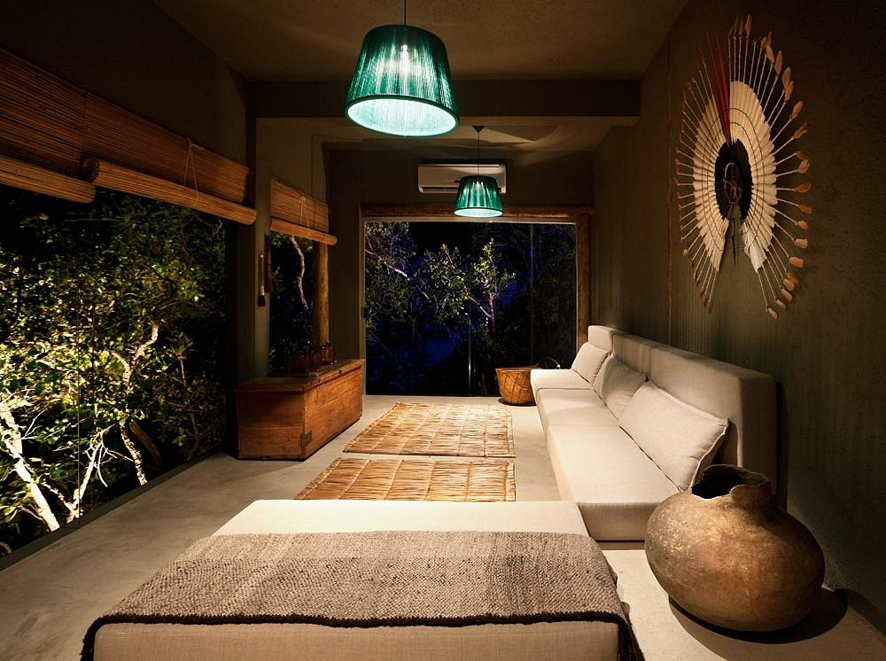

Serviços
Na hospedaria na OÁSIS, Cada refeição é uma jornada culinária, onde os hóspedes têm a oportunidade de explorar uma variedade de sabores e texturas que refletem a diversidade da cozinha mineira. Dos tradicionais pratos caseiros, como o famoso tutu de feijão e o frango com quiabo, aos pratos mais sofisticados, inspirados nas técnicas culinárias contemporâneas, nossa cozinha é uma homenagem à tradição e à inovação.
Nossos menus são cuidadosamente elaborados para oferecer uma variedade de opções que atendam a todos os paladares e preferências dietéticas. Utilizamos ingredientes frescos e orgânicos sempre que possível, muitos dos quais são cultivados em nossa horta orgânica, garantindo qualidade e sabor em cada prato que servimos.
Além das refeições principais, também oferecemos uma variedade de lanches e petiscos para os hóspedes desfrutarem ao longo do dia. Nossos pães e bolos caseiros são assados diariamente, enchendo a hospedaria com o aroma reconfortante de delícias recém-saídas do forno.
E para acompanhar as refeições, nossa carta de vinhos cuidadosamente selecionada oferece uma variedade de opções para harmonizar com cada prato, enquanto os sucos naturais e os chás de ervas frescas refrescam e revitalizam.
Na hospedaria na OÁSIS, a alimentação é mais do que uma necessidade; é uma experiência sensorial que enriquece o corpo, a mente e a alma. Cada refeição é uma oportunidade de se conectar com a terra e com a comunidade local, celebrando os sabores e as tradições que tornam a culinária mineira tão especial.